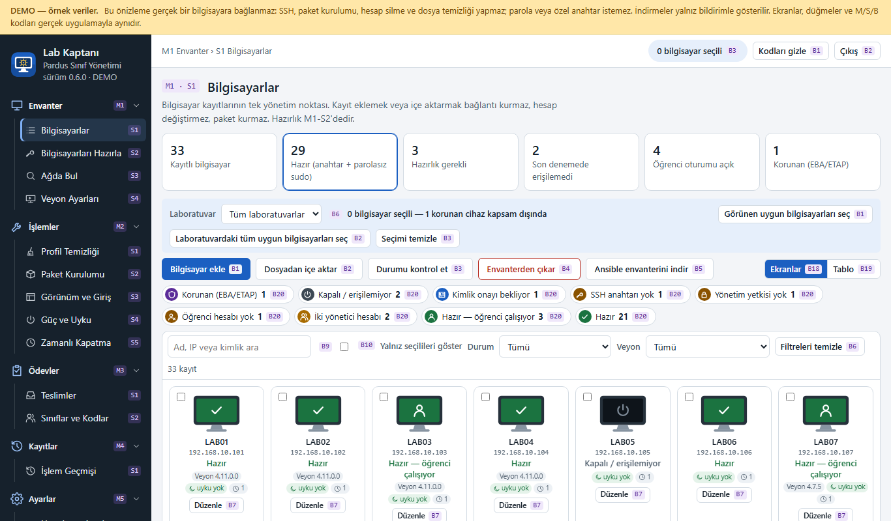
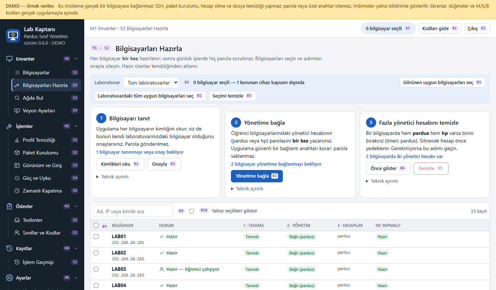
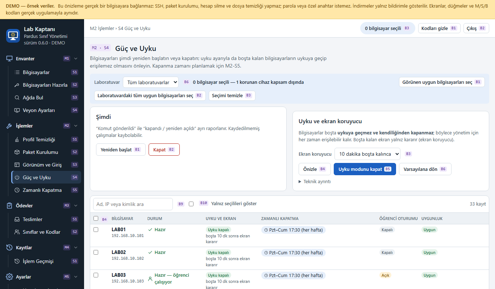
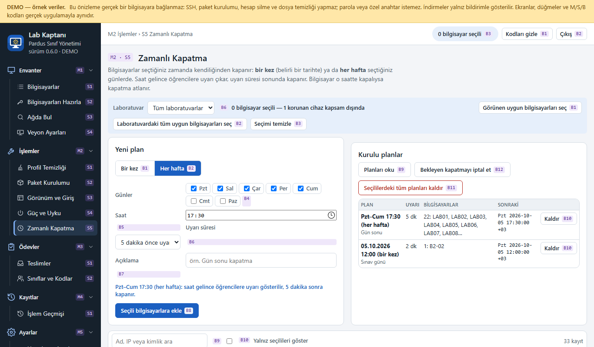
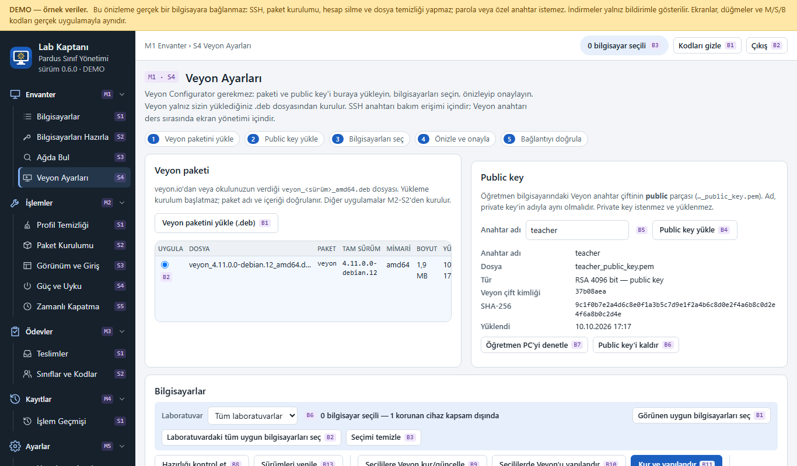
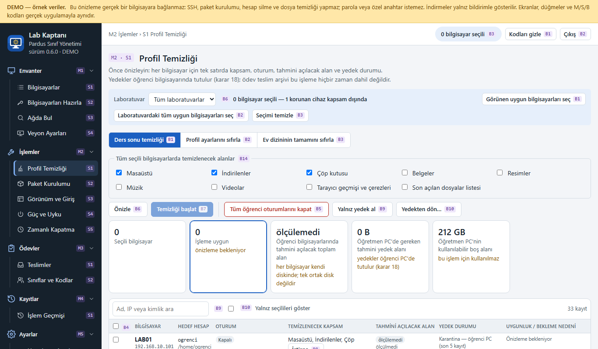

Neler yapar?
Bilgisayar envanteri
Bilgisayarlar her durumda ayrı renk ve simgeyle görünür: hazır, kapalı, anahtar yok, yetki yok.
Bir kez hazırlık
Parola bir kez girilir; sonra günlük işlerde hiç parola sorulmaz.
Güç ve uyku
Bilgisayarlar boşta uykuya geçmez, kendiliğinden kapanmaz; yalnız ekran kararır.
Zamanlı kapatma
Bir kez veya her hafta, uyarı süresiyle kapanma planı. İptal edilebilir.
Veyon kurulumu
Veyon Configurator olmadan Veyon paketini ve anahtarı yükleyip seçili bilgisayarlara kurar.
Profil temizliği ve yedek
Ders sonu temizliği, geri alınabilir karantina, yedekleme ve yedekten dönüş.
Ödev teslimi
Öğrenciler sınıf kodlarıyla ödevlerini yükler; öğretmen takip eder ve ZIP olarak indirir.
Önce önizleme
Her işlem hangi bilgisayarlara dokunacağını gösterir ve kesin liste onayıyla başlar.
Ekrandan görüntüler






Not: Ekran görüntüleri ve canlı önizleme örnek verilerle çalışır; bir bilgisayara bağlanmaz. Gerçek kurulum için aşağıdaki belgeleri izleyin.
Kurulum
Öğretmen bilgisayarında (Pardus 23) paketi edinip kurun:
sudo dpkg -i pardus-sinif-yonetimi_0.6.0_amd64.debPaket kendi Python çalışma ortamını içerir; internet veya ek paket gerekmez. Paketi depodaki
paketleme/deb_yap.py betiğiyle de üretebilirsiniz.
Belgeler
İlk kullanım
Öğretmenler için adım adım kılavuz.
Yönetici kılavuzu
Kurulum, mimari, veri konumları, kurtarma.
Güvenlik
Yetki modeli ve bilinen sınırlar.
Katkı
Geliştirme ortamı, testler ve kurallar.